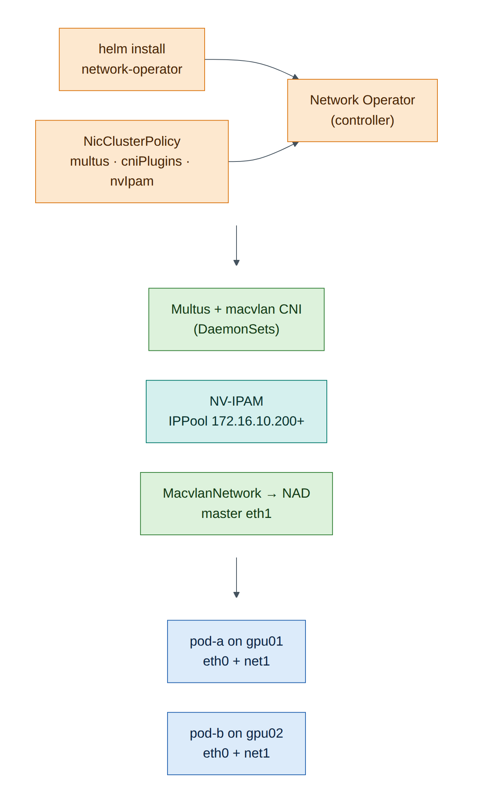
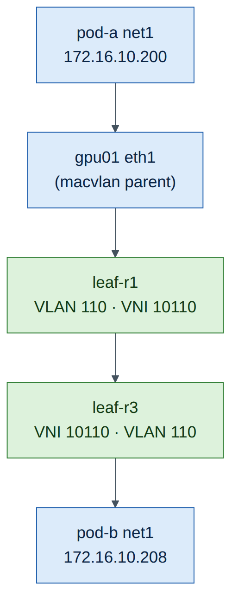

Lab 10 — Kubernetes and the NVIDIA Network Operator¶
Companion to the NCP-AIN Certification Guide
This free lab is part of the hands-on companion to NCP-AIN Certification Guide by Vakeesan Thevarajah (Cloudfoxy Ltd). The book explains the theory, design choices and hardware behaviour behind every step.
Lab at a glance¶
| Book chapters | 16 (NVIDIA Network Operator: deploy and verify) |
| Exam objectives | 4.1 Deploy the Network Operator · 4.2 Verify Network Operator functionality |
| Time | 90 minutes |
| Air resources | hxb-gpu01 (control plane + worker), hxb-gpu02 (worker), EVPN fabric from Lab 5 |
| Prerequisites | Lab 5 (AURORA VLAN 110 working between gpu01 and gpu02) |
Objectives¶
- Build a two-node Kubernetes cluster with kubeadm on hxb-gpu01 and hxb-gpu02.
- Install the NVIDIA Network Operator with Helm in namespace
nvidia-network-operator. - Apply a NicClusterPolicy that deploys the secondary-network stack (Multus, CNI plugins, NV-IPAM).
- Create an NV-IPAM IPPool and a MacvlanNetwork on eth1 (AURORA 172.16.10.0/24).
- Attach pods to the high-speed network with the networks annotation and ping pod-to-pod across the EVPN fabric.
- Verify the operator the way objective 4.2 expects.
Background¶
On Helix, training pods need a second interface on the RDMA fabric in addition to the default cluster network. The Network Operator (Chapter 16) deploys everything needed from one custom resource, the NicClusterPolicy: the DOCA driver container, RDMA device plugins, Multus, CNI plugins and NV-IPAM. Network CRs such as MacvlanNetwork, HostDeviceNetwork and IPoIBNetwork then generate NetworkAttachmentDefinitions that pods request by annotation.
Air's servers have virtio NICs, not ConnectX, so this lab deploys only the parts that don't need NVIDIA hardware: Multus, CNI plugins and NV-IPAM. The driver container and RDMA device plugins are explained but left out. Everything else (the operator, the CRDs, the reconcile loop, the NADs and the pod attachments) is real.

Version note
Kubernetes, the Network Operator and container images move quickly. This lab was written against the Kubernetes 1.34 package repository and Network Operator 26.7 (image tag network-operator-v26.7.0, as in NVIDIA's quick-start guides at the time of writing). Use the versions that helm search repo and the Network Operator release notes show for your date.
Step-by-step¶
Task 1 — Prepare both nodes (gpu01 and gpu02)¶
Run every step in this task on both servers. The cluster uses the OOB network (eth0) for Kubernetes traffic, and eth1 stays free for the secondary network.
-
Record each node's eth0 address; you'll need gpu01's.
(Illustrative: the OOB network uses 192.168.200.0/24.)
-
Kernel settings for Kubernetes networking, and swap off:
ubuntu@hxb-gpu01:~$ sudo swapoff -a ; sudo sed -i '/ swap / s/^/#/' /etc/fstab ubuntu@hxb-gpu01:~$ printf 'overlay\nbr_netfilter\n' | sudo tee /etc/modules-load.d/k8s.conf ubuntu@hxb-gpu01:~$ sudo modprobe overlay ; sudo modprobe br_netfilter ubuntu@hxb-gpu01:~$ printf 'net.bridge.bridge-nf-call-iptables=1\nnet.bridge.bridge-nf-call-ip6tables=1\nnet.ipv4.ip_forward=1\n' | sudo tee /etc/sysctl.d/k8s.conf ubuntu@hxb-gpu01:~$ sudo sysctl --system >/dev/null -
Install containerd and use the systemd cgroup driver:
ubuntu@hxb-gpu01:~$ sudo apt-get update && sudo apt-get install -y containerd apt-transport-https ca-certificates curl gpg ubuntu@hxb-gpu01:~$ sudo mkdir -p /etc/containerd ubuntu@hxb-gpu01:~$ containerd config default | sudo tee /etc/containerd/config.toml >/dev/null ubuntu@hxb-gpu01:~$ sudo sed -i 's/SystemdCgroup = false/SystemdCgroup = true/' /etc/containerd/config.toml ubuntu@hxb-gpu01:~$ sudo systemctl restart containerd -
Install kubeadm, kubelet and kubectl from the Kubernetes package repository:
ubuntu@hxb-gpu01:~$ KVER=v1.34 ubuntu@hxb-gpu01:~$ curl -fsSL https://pkgs.k8s.io/core:/stable:/$KVER/deb/Release.key | sudo gpg --dearmor -o /etc/apt/keyrings/kubernetes-apt-keyring.gpg ubuntu@hxb-gpu01:~$ echo "deb [signed-by=/etc/apt/keyrings/kubernetes-apt-keyring.gpg] https://pkgs.k8s.io/core:/stable:/$KVER/deb/ /" | sudo tee /etc/apt/sources.list.d/kubernetes.list ubuntu@hxb-gpu01:~$ sudo apt-get update && sudo apt-get install -y kubelet kubeadm kubectl ubuntu@hxb-gpu01:~$ sudo apt-mark hold kubelet kubeadm kubectl
Checkpoint
-
kubeadm versionworks on both nodes; containerd is active.
Task 2 — Create the cluster¶
-
On gpu01, initialise the control plane on the OOB address, with the pod CIDR that Flannel expects:
ubuntu@hxb-gpu01:~$ sudo kubeadm init --apiserver-advertise-address=192.168.200.21 --pod-network-cidr=10.244.0.0/16 ... Your Kubernetes control-plane has initialized successfully! ... kubeadm join 192.168.200.21:6443 --token abcdef.0123456789abcdef \ --discovery-token-ca-cert-hash sha256:1f2e...(Illustrative: copy your own join command.)
-
Set up kubectl for the
ubuntuuser and let pods run on the control-plane node (a two-node lab needs both): -
Install the Flannel pod network (the primary CNI,
eth0in pods): -
On gpu02, run the join command from step 1 with
sudo. -
Back on gpu01:
ubuntu@hxb-gpu01:~$ kubectl get nodes -o wide NAME STATUS ROLES AGE VERSION INTERNAL-IP hxb-gpu01 Ready control-plane 6m v1.34.x 192.168.200.21 hxb-gpu02 Ready <none> 1m v1.34.x 192.168.200.22(Illustrative.)
Checkpoint
- Both nodes
Ready;kubectl get pods -Ashows Flannel and CoreDNS running.
Task 3 — Install Helm and the Network Operator¶
ubuntu@hxb-gpu01:~$ curl -fsSL https://raw.githubusercontent.com/helm/helm/main/scripts/get-helm-3 | bash
ubuntu@hxb-gpu01:~$ helm repo add nvidia https://helm.ngc.nvidia.com/nvidia
ubuntu@hxb-gpu01:~$ helm repo update
ubuntu@hxb-gpu01:~$ helm search repo nvidia/network-operator --versions | head -4
NAME CHART VERSION APP VERSION DESCRIPTION
nvidia/network-operator 26.7.0 v26.7.0 Nvidia network operator
...
(Illustrative.) Install the version shown at the top:
ubuntu@hxb-gpu01:~$ helm install network-operator nvidia/network-operator \
-n nvidia-network-operator --create-namespace --version 26.7.0 --wait
ubuntu@hxb-gpu01:~$ kubectl -n nvidia-network-operator get pods
NAME READY STATUS RESTARTS
network-operator-6d8c7b9f9-4kq2x 1/1 Running 0
network-operator-node-feature-discovery-master-... 1/1 Running 0
network-operator-node-feature-discovery-worker-... 1/1 Running 0
(Illustrative.) At this point only the controller (and Node Feature Discovery, if the chart enables it) runs. Nothing is deployed to the nodes until you create a NicClusterPolicy.
You should see the CRDs from Chapter 16: nicclusterpolicies, macvlannetworks, hostdevicenetworks, ipoibnetworks, and NV-IPAM's ippools and cidrpools.
Task 4 — Apply a NicClusterPolicy for the secondary network¶
ubuntu@hxb-gpu01:~$ mkdir -p ~/netop && cat > ~/netop/nicclusterpolicy.yaml <<'EOF'
apiVersion: mellanox.com/v1alpha1
kind: NicClusterPolicy
metadata:
name: nic-cluster-policy
spec:
# No ofedDriver / rdmaSharedDevicePlugin: Air servers have no NVIDIA NICs.
secondaryNetwork:
multus:
image: multus-cni
repository: nvcr.io/nvidia/mellanox
version: network-operator-v26.7.0
cniPlugins:
image: plugins
repository: nvcr.io/nvidia/mellanox
version: network-operator-v26.7.0
nvIpam:
image: nvidia-k8s-ipam
repository: nvcr.io/nvidia/mellanox
version: network-operator-v26.7.0
enableWebhook: false
EOF
ubuntu@hxb-gpu01:~$ kubectl apply -f ~/netop/nicclusterpolicy.yaml
ubuntu@hxb-gpu01:~$ kubectl -n nvidia-network-operator get pods -w
Wait until the Multus, CNI-plugins and NV-IPAM pods are Running on both nodes (Ctrl+C to stop watching), then check the policy status:
ubuntu@hxb-gpu01:~$ kubectl get nicclusterpolicy nic-cluster-policy -o jsonpath='{.status.state}{"\n"}'
ready
Exam focus
"NicClusterPolicy ready" is the first thing objective 4.2 asks you to verify. If it stays notReady, kubectl describe nicclusterpolicy nic-cluster-policy lists which component is failing, and the operator logs say why.
Checkpoint
- NicClusterPolicy state is
ready; component pods Running on both nodes. -
ls /etc/cni/net.d/on each node shows a Multus configuration file.
Task 5 — IPPool and MacvlanNetwork on eth1¶
-
Create an NV-IPAM pool inside AURORA's 172.16.10.0/24. Keep it clear of host addresses (.101, .102) and the gateway (.1): hand out .200 onwards.
ubuntu@hxb-gpu01:~$ cat > ~/netop/ippool.yaml <<'EOF' apiVersion: nv-ipam.nvidia.com/v1alpha1 kind: IPPool metadata: name: aurora-pool namespace: nvidia-network-operator spec: subnet: 172.16.10.0/24 perNodeBlockSize: 8 gateway: 172.16.10.1 exclusions: - startIP: 172.16.10.1 endIP: 172.16.10.199 EOF ubuntu@hxb-gpu01:~$ kubectl apply -f ~/netop/ippool.yaml ubuntu@hxb-gpu01:~$ kubectl -n nvidia-network-operator get ippool aurora-pool -o yaml | grep -A8 'status:'
The status shows the per-node blocks NV-IPAM allocated, one block of 8 addresses per node.
Version note
If your NV-IPAM release rejects exclusions, remove that block and use a smaller dedicated range by choosing a narrower subnet (for example 172.16.10.192/27) with the same gateway.
-
Create the MacvlanNetwork. The operator turns it into a NetworkAttachmentDefinition in the
defaultnamespace.ubuntu@hxb-gpu01:~$ cat > ~/netop/macvlan.yaml <<'EOF' apiVersion: mellanox.com/v1alpha1 kind: MacvlanNetwork metadata: name: aurora-net spec: networkNamespace: "default" master: "eth1" mode: "bridge" mtu: 9000 ipam: | { "type": "nv-ipam", "poolName": "aurora-pool" } EOF ubuntu@hxb-gpu01:~$ kubectl apply -f ~/netop/macvlan.yaml ubuntu@hxb-gpu01:~$ kubectl get macvlannetwork aurora-net -o jsonpath='{.status.state}{"\n"}' ready ubuntu@hxb-gpu01:~$ kubectl get network-attachment-definitions NAME AGE aurora-net 10s
Task 6 — Pods on the high-speed network¶
-
Two test pods, pinned one per node:
ubuntu@hxb-gpu01:~$ cat > ~/netop/pods.yaml <<'EOF' apiVersion: v1 kind: Pod metadata: name: pod-a annotations: k8s.v1.cni.cncf.io/networks: aurora-net spec: nodeName: hxb-gpu01 containers: - name: net image: nicolaka/netshoot command: ["sleep", "infinity"] --- apiVersion: v1 kind: Pod metadata: name: pod-b annotations: k8s.v1.cni.cncf.io/networks: aurora-net spec: nodeName: hxb-gpu02 containers: - name: net image: nicolaka/netshoot command: ["sleep", "infinity"] EOF ubuntu@hxb-gpu01:~$ kubectl apply -f ~/netop/pods.yaml ubuntu@hxb-gpu01:~$ kubectl get pods -o wide -
Check that each pod has two interfaces:
ubuntu@hxb-gpu01:~$ kubectl exec pod-a -- ip -br addr lo UNKNOWN 127.0.0.1/8 eth0@if12 UP 10.244.0.12/24 net1@if3 UP 172.16.10.200/24 ubuntu@hxb-gpu01:~$ kubectl exec pod-b -- ip -br addr | grep net1 net1@if3 UP 172.16.10.208/24(Illustrative addresses.)
eth0is the Flannel cluster network;net1is the macvlan interface on the node's eth1, in AURORA. -
Ping pod-to-pod across the EVPN fabric, and from a pod to a host and to the gateway:
pod-a's frames leave gpu01 eth1 into leaf-r1, cross the fabric in VNI 10110 and reach pod-b on gpu02 behind leaf-r3. Confirm on leaf-r1 that EVPN learned the pods' MAC addresses:

Checkpoint
- Both pods Running with net1 in 172.16.10.0/24 from the IPPool.
- pod-a ↔ pod-b ping works over net1; EVPN on leaf-r1 shows the pods' MACs.
Task 7 — What RDMA hardware would add¶
On Helix-B's real nodes you'd add these to the same NicClusterPolicy (Chapter 16), and each needs NVIDIA NICs:
| Component | What it adds | Why it isn't in this lab |
|---|---|---|
ofedDriver (DOCA driver container) |
Installs the DOCA-OFED drivers on each node | Needs ConnectX/BlueField hardware |
rdmaSharedDevicePlugin |
Advertises rdma/rdma_shared_device_a in node Allocatable; pods request it with IPC_LOCK |
Selects RDMA devices of physical NICs |
| SR-IOV device plugin / network operator | One VF per pod per rail (nvidia.com/rail0 …) — the Spectrum-X quick start pattern |
Needs SR-IOV capable NICs |
| NIC Configuration Operator | Applies the Spectrum-X NIC profile (spectrumXOptimized) |
Firmware settings on SuperNICs |
ib-kubernetes |
Adds pod GUIDs to UFM PKeys on InfiniBand | Needs UFM and an IB fabric |
With those in place, the verification ladder from Chapter 16 continues: Allocatable shows the RDMA resource, the pod sees /dev/infiniband, ibv_devinfo works in the pod, and ib_write_bw runs pod-to-pod.
Verify¶
- Operator pods Running; NicClusterPolicy
ready. - IPPool allocated per-node blocks; MacvlanNetwork
ready; NADaurora-netexists. - Pods got net1 addresses from the pool and reach each other across leaves.
Break and fix¶
Fault 1 — wrong master interface
- Inject: change
master: "eth1"tomaster: "ens1f0"inmacvlan.yaml, apply, and recreate pod-b (kubectl delete pod pod-b && kubectl apply -f ~/netop/pods.yaml). - Symptom: pod-b stuck in
ContainerCreating. - Diagnosis:
kubectl describe pod pod-bshows a Multus/CNI error such asfailed to lookup master "ens1f0": Link not found. - Fix: set
master: "eth1", re-apply, recreate the pod.
Fault 2 — pool exhausted
- Inject: set
perNodeBlockSize: 1in the IPPool (on a new pool name, saytiny-pool, referenced by a new MacvlanNetwork) and start two pods on the same node. - Symptom: the second pod stays in
ContainerCreatingwith an IPAM allocation error. - Diagnosis:
kubectl get ippool tiny-pool -o yamlshows a one-address block per node. - Fix: size
perNodeBlockSizefor the pods per node you expect.
Clean-up / save state¶
Leave the cluster in place if you plan to revisit it; it survives checkpoints. If memory is tight for later labs, sudo systemctl stop kubelet containerd on both nodes frees it.
Exam tie-in¶
- 4.1: Helm install into
nvidia-network-operator; NicClusterPolicy decides what gets deployed; network CRs (Macvlan, HostDevice, IPoIB, SR-IOV) create NADs. - 4.2: verify operator pods, NicClusterPolicy
ready, node resources, NADs, pod interfaces, and finally an RDMA test between pods. - Know which components need NVIDIA hardware (driver container, RDMA device plugin, SR-IOV, NIC configuration) and which don't (Multus, CNI plugins, NV-IPAM).
Review questions¶
- What does the Network Operator deploy before you create a NicClusterPolicy?
- How does a pod ask for the secondary network?
- Which resource would a real RoCE pod request in addition, and which capability does it need?
kubectl get nicclusterpolicyshowsnotReady. What are your next two commands?- Why does pod-b's net1 appear to the fabric as another host in VLAN 110?
Answers¶
- Only the operator controller (plus Node Feature Discovery if enabled in the chart). Components are deployed when a NicClusterPolicy exists.
- With the annotation
k8s.v1.cni.cncf.io/networks: <network-name>, which Multus resolves to the NetworkAttachmentDefinition created by the network CR. - An RDMA resource such as
rdma/rdma_shared_device_a(or an SR-IOV VF resource), and theIPC_LOCKcapability so it can pin memory. kubectl describe nicclusterpolicy nic-cluster-policy(which component is failing) andkubectl -n nvidia-network-operator logs deploy/network-operator(why).- net1 is a macvlan child of gpu02's eth1 with its own MAC address, bridged onto eth1, which is an access port in VLAN 110. EVPN learns and advertises its MAC and IP like any server.
Go deeper
The matching book chapters cover the exam objectives for this lab in full, with a Q&A pack of about 40 exam-style questions per chapter.